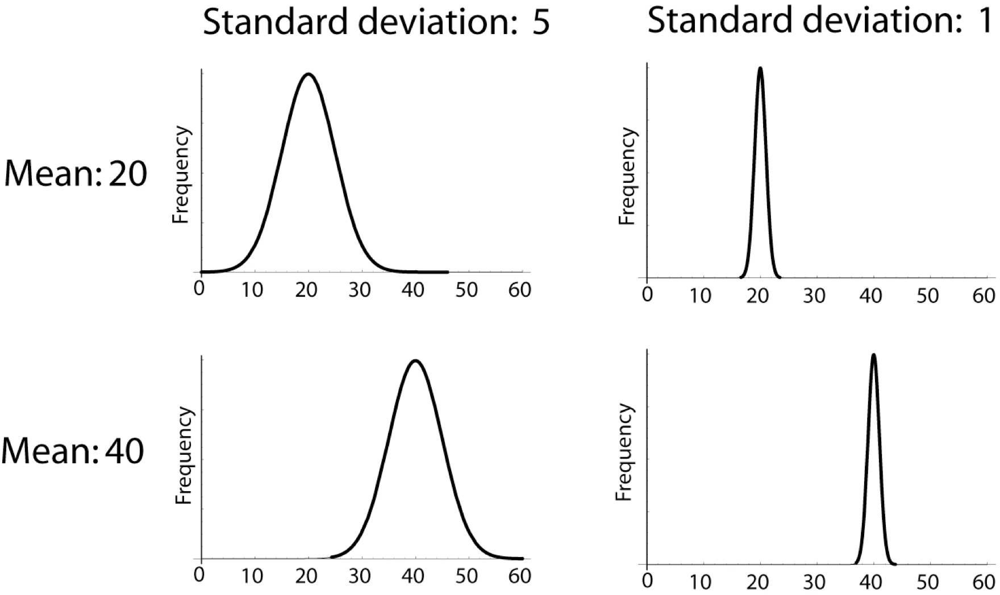
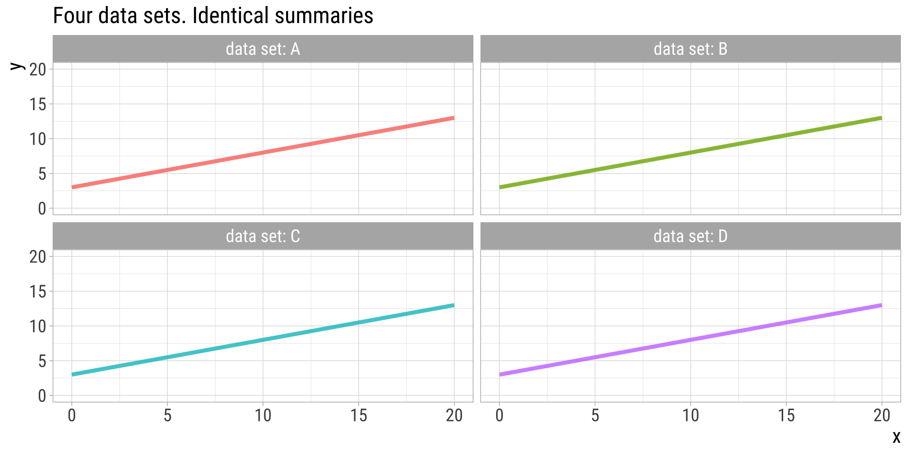
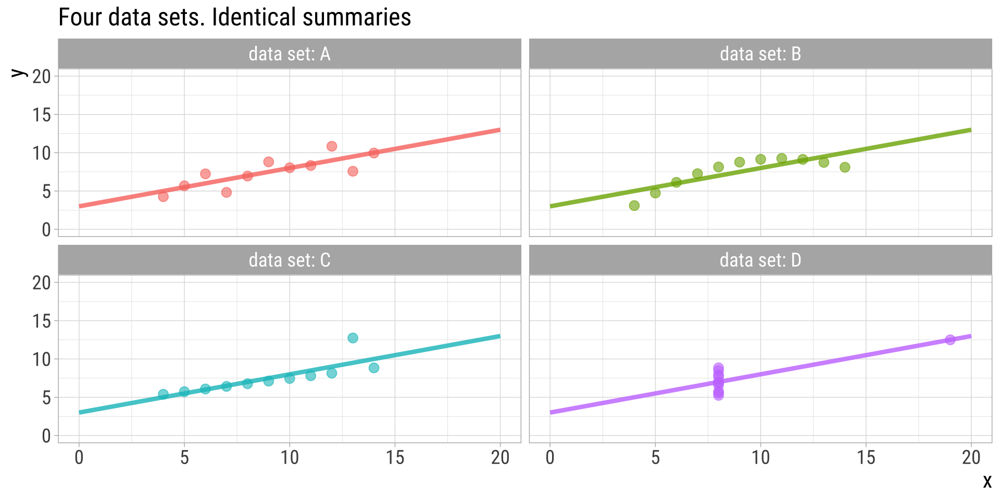
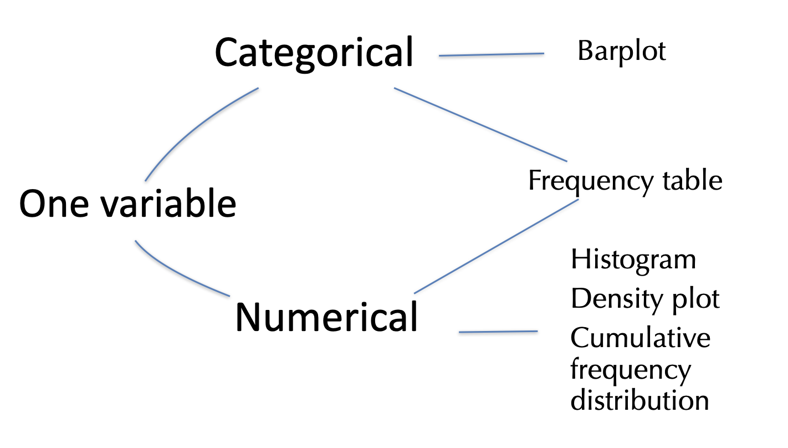
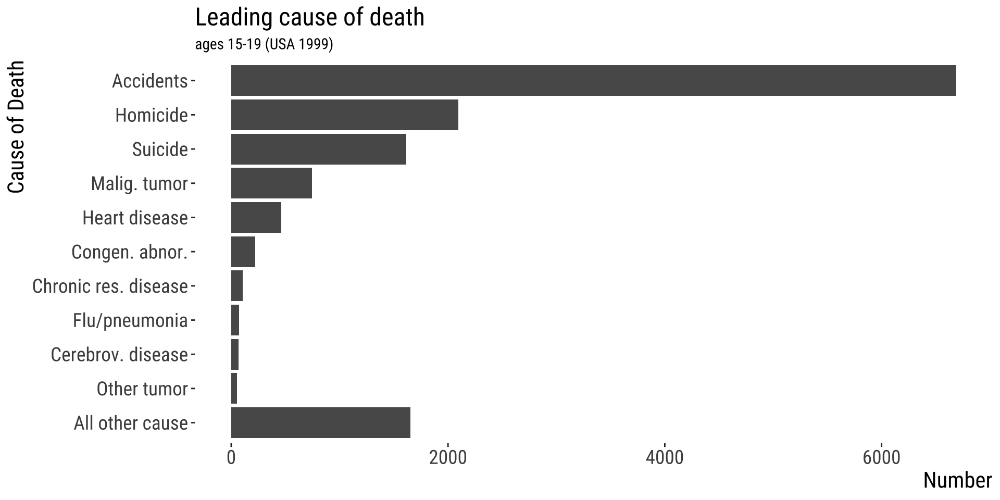
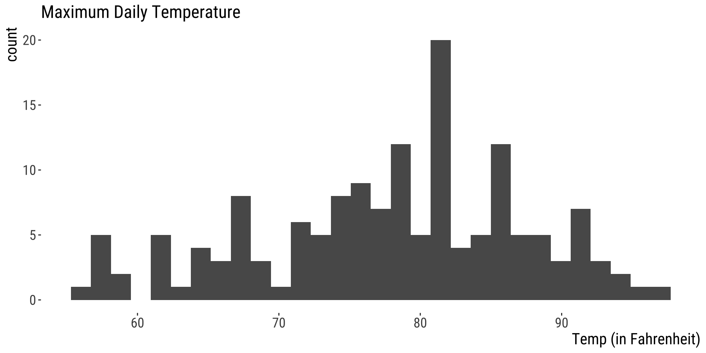
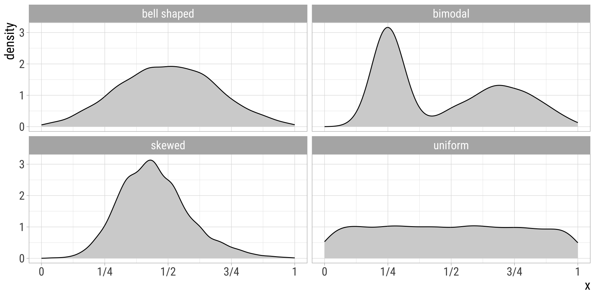
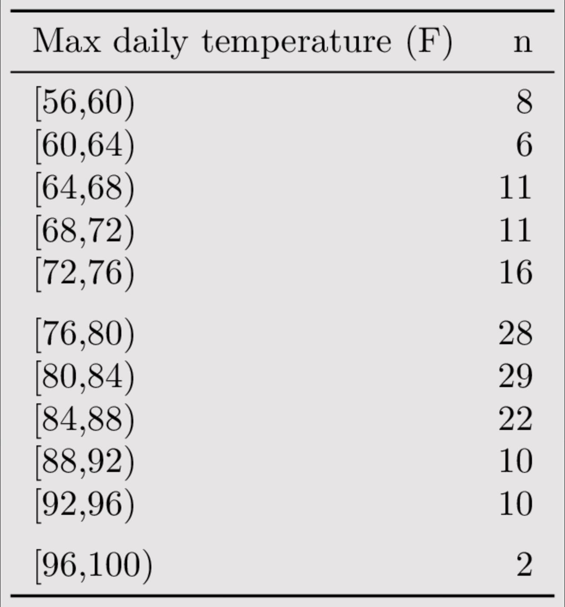

The CV does not have to be expressed as a percentage. You may also find it as simply a proportion, i.e., \(\frac{\sigma}{\mu}\) (parameter) or \(\frac{s}{\bar{Y}}\) (estimate).
Good estimators are unbiased
The expected value of an unbiased estimator equals the population parameter.
Biased estimators should be avoided if possible.
Biased estimators (often) change with the sample size.
The sample variance and sample standard deviation are divided by (n – 1), rather than n to minimize bias.
The range is a bad summary statistic because it is biased, and increases with sample size.
Measures of width in graphical terms
SD and var: Particularly informative for symmetric distributions, but not for asymmetric ones

Manipulating means
The mean of the sum of two variables \(X\) and \(Y\): \(E[X + Y] = E[X]+ E[Y]\)
The mean of the sum of a variable \(X\) and a constant \(c\): \(E[X + c] = E[X]+ c\)
The mean of a product of a variable \(X\) and a constant \(c\): \(E[cX] = cE[X]\)
\(E\): expected value of a variable
Manipulating variance
The variance of the sum of two variables \(X\) and \(Y\): \(Var[X + Y] = Var[X]+ Var[Y]\) (if and only if X and Y are independent).
The variance of the sum of a variable \(X\) and a constant \(c\): \(Var[X + c] = Var[X]\)
The variance of a product of a variable \(X\) and a constant \(c\): \(Var[cX] = c^2 Var[X]\)
Example: converting units
If the mean and variance in height (in centimers) in a sample are \(\bar{X}=169.8\text{ cm}\) and \(s^2=131.98\text{ cm}^2\) and \(1\text{ cm} = 0.394\) inches, find the mean and variance in inches.
Four datasets (A-D) 11 observations per variable per dataset Each dataset has x and y variables (both numerical)
Anscombe’s quartet: summary statistics
group
mean.x
mean.y
sd.x
sd.y
cor.xy
A
9
7.500909
3.316625
2.031568
0.8164205
B
9
7.500909
3.316625
2.031657
0.8162365
C
9
7.500000
3.316625
2.030424
0.8162867
D
9
7.500909
3.316625
2.030579
0.8165214
Anscombe’s quartet: trendlines
Trendlines reveal no difference

Anscombe’s Quartet: Data
Showing the data reveals large differences

Ascombe described the article as being intended to counter the impression among statisticians that “numerical calculations are exact, but graphs are rough.”
Constructed by F. Anscombe (1973)
Demonstrates both the importance of graphing data when analyzing it, and the effect of outliers and other influential observations on statistical properties.
Displaying data is very important
Displaying data helps you:
Understand your data
Communicate your results
Exploratory vs Explanatory Plots: Goals
In exploratory data analysis, you aim to find the story of the data.
In explanatory data analysis, you aim to share the story of the data.
Note: There is a continuum between explanatory and exploratory plots. For example, the plot you show your lab is probably somewhere between what you make for yourself and what you send to the New York Times.
Exploratory vs Explanatory Plots: Focus
For exploratory plots: Don’t fuss about colors, labels, names etc. The goal is for you to understand the data.
For explanatory plots: Fuss about all of this. You must consider your audience may, for example, consist of:
- People unfamiliar with your data
- People who are colorblind
The suggestions we will cover will help the story of the data reveal itself, and are therefore useful for exploratory & explanatory plots.
Which types of summaries and graphs to use?
Let data type guide presentation
To visualize data for a single variable…
Show its frequency distribution

One categorical variable
Barplot/bar graph
What is the variable?
Notice the ordering
Absolute or relative frequencies?
Bar area reflects frequencies

One categorical variable
Pie chart
Same purpose as bar graph
Much harder to spot patterns
Bar graphs generally preferred
One categorical variable
Frequency table
Cause_of_death
Number
Accidents
6688
Homicide
2093
Suicide
1615
Malig. tumor
745
Heart disease
463
Congen. abnor.
222
Chronic res. disease
107
Flu/pneumonia
73
Cerebrov. disease
67
Other tumor
52
All other cause
1653
What is the variable?
Notice the ordering
Absolute or relative frequencies?
One numerical variable
Goals
Visualize the center (“average”)
Visualize the spread (variability)
Visualize the shape (distribution)
One numerical variable
Histogram
datasets::airquality|>ggplot(aes(x =Temp))+geom_histogram()+xlab("Temp (in Fahrenheit)")+ggtitle("Maximum Daily Temperature")+bb_theme()# this is just a theme I made to make plots look better

30 bins
30 bins
Histograms – consider your bins
Each block of a histogram is called a “bin”
The size or “width” of a bin refers to the range in each block.
Changing bins can change stories
Don’t be fooled.
Don’t allow bad bin widths to obscure your data.
DO NOT assume that default bin widths are appropriate.
One numerical variable
Density Plots

One numerical variable
Frequency table

Measured in LaGuardia Airport, NY, 1973. Data from the “airquality” dataset from the datasets package.
11 bins
equally-sized
Next week
More on the types of plots/tables for different types of data